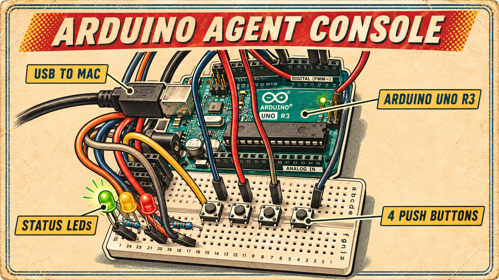
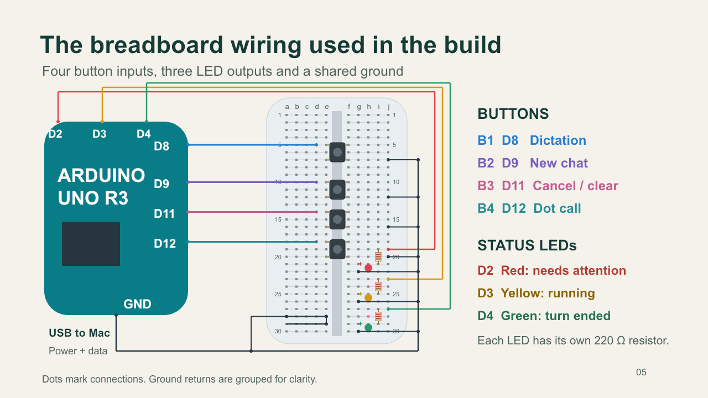

A physical console for your coding agent
四个实体按键，三盏真实任务状态灯。
Start speaking, open a new chat, cancel a draft or call Dot. An Arduino reads the buttons while a native Mac bridge connects them to Codex. Real task events return to the LEDs.
Review the words and send them yourself. Green means the turn ended, not that the answer is correct.

Four controls, with human review
| Button | Action |
|---|---|
| 1 · D8 | Start/stop dictation. Keep the transcript unsent. |
| 2 · D9 | Bring Codex forward and open a new project chat. |
| 3 · D11 | Cancel and discard dictation, or clear an unsent draft. |
| 4 · D12 | Start/end a native Dot live voice call. |
YELLOW — Selected main task running.
RED — Answer, choice or permission needed, or a bridge fault.
GREEN — Turn ended or idle. Inspect the result.
Short red blink: unknown or unavailable state. Older chats and subagents do not take over the selected main task.
The circuit you can reproduce
UNO R3, four tactile switches, three LEDs, three 220 Ω resistors, a breadboard, jumpers and a USB data cable.

Terminals are expanded by function and ground returns are grouped for readability. Use the exact hole table for assembly.

Hardware in use
28 seconds of actual hardware footage, with audio removed. These early button clips do not validate lifecycle LED colors. Desktop outcomes and the real task-light sequence received separate acceptance checks.
Build it in seven steps
- Assemble the four-button, three-LED circuit using the exact wiring table.
- Upload
firmware/voice_console/voice_console.inoto an UNO R3. - Run
bash macos/build.shto compile, locally sign and self-test the bridge. - Set your project, app and serial path in the optional local configuration.
- Verify Codex shortcuts and authorize the built app through macOS Accessibility.
- Preview/install the seven passive observers, then review them in Codex Hooks.
- Check the full loop on your own setup, including manual transcript review and real task feedback.
What the Arduino does
It reads debounced button edges, sends USB serial events, receives light commands and acknowledges them. The Mac and Codex handle the microphone, transcription and AI.
Tested behaviour and limits
The original prototype accepted all four desktop actions and a real yellow/red/yellow/green lifecycle sequence. Public v0.5.1 adds portable configuration and source packaging.
App controls and the read-only internal SQLite thread filter are version-sensitive. Actual permission waiting has regression coverage but no physical acceptance. No productivity improvement has been measured. The arm64 app is ad-hoc signed, not notarized.